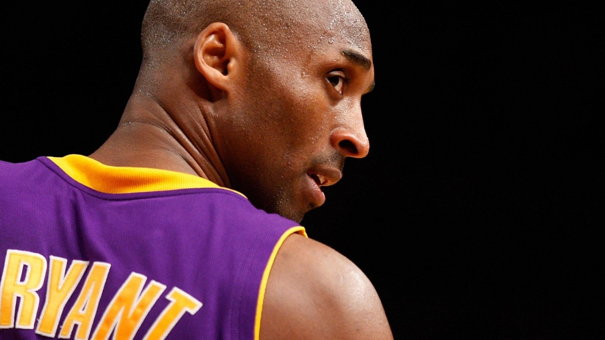

Kobe Bryant "The Black Mamba"

"The most important thing is to try and inspire people so that they can be great at whatever they want to do." - Kobe Bryant
Kobe Bryant's Career
Early Years and Rise to Stardom
- 1996 NBA Draft: 13th overall pick by the Charlotte Hornets, traded to the Lakers.
- Youngest NBA All-Star: Became an All-Star at age 19.
- Dynamic Duo: Formed one of the most formidable duos in NBA history with Shaquille O'Neal.
- Three-Peat: Key player in the Lakers' three consecutive championships (2000, 2001, 2002).
MVP and Scoring Titles
- MVP Award: Won his first and only MVP in 2008.
- Scoring Titles: Led the NBA in scoring during the 2005-2006 and 2006-2007 seasons.
Later Years and Retirement
- 2009 and 2010 Championships: Led the Lakers to two more NBA titles as the undisputed leader of the team.
- Olympic Gold: Won two gold medals with the USA team (2008, 2012).
- Farewell Performance: Scored 60 points in his final NBA game in 2016.
- Retirement: Announced his retirement after 20 seasons with the Lakers in 2016.
Post-Career and Legacy
- Academy Award Winner: Won an Oscar in 2018 for his short film "Dear Basketball".
- Tragic Passing: Died in a helicopter crash in 2020, deeply impacting the basketball world and beyond.
Kobe's Legacy
Kobe Bryant's legacy is defined by his relentless work ethic, competitive fire, and immense basketball skill. His "Mamba Mentality" has inspired countless athletes and fans worldwide.